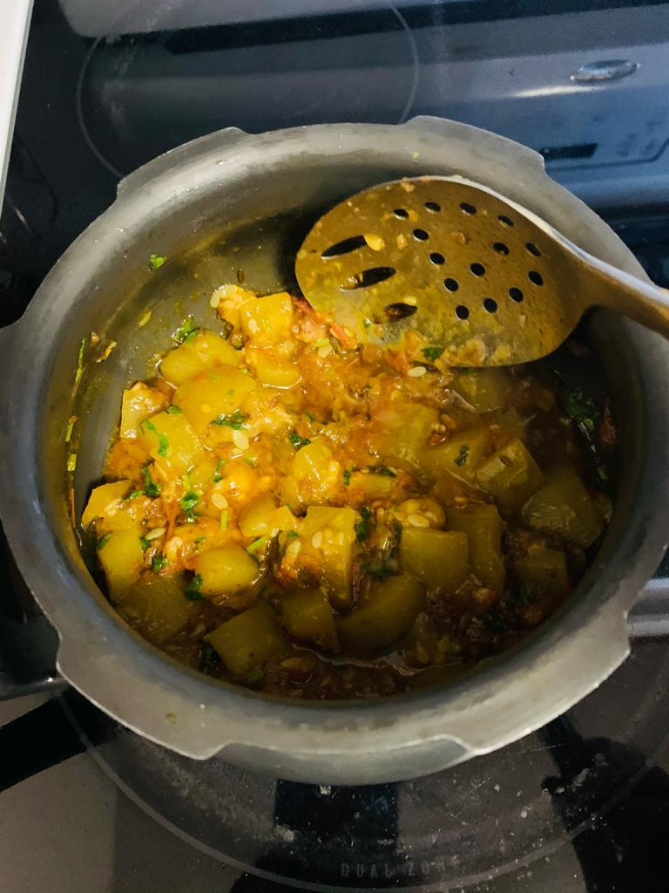

Lauki Badi

Description
This a healthy dish from India made with Lauki and Badi.
There is a video as well which is slightly different style of making this curry which you can watch on youtube link below.
Youtube Lauki Badi
I have provided below my moms recipe. Thats how I make it.
Ingredients
- Lauki half diced.
- One Tomato chopped.
- Cumin seeds 2 tsp
- Salt to taste.
- Badi one broken to pieces.
- Turmeric powder.
- Red chilli powder
- Garam masala half tbsp.
- Oil 2 tbsp.
- 2 green chilies
- 1 inch ginger
Steps
- In a cooker add oil and let it heat.
- Add Badi. Let it roast and remove it.
- Add Cumin seeds.
- Add ginger and chilies.
- Add tomatoes. Sauté them for sometime.
- Add haldi.
- Add red chilli powder.
- Add salt.
- Add the Lauki and sauté the mixture for couple minutes.
- Add the roasted badi.
- Add water and cover the cooker.
- Wait for one whistle. Once the pressure is released. Open the cover and cook so the excess water is evaporated.
- Add garam masala and cook 2 minutes.
- Garnish with some coriander. Ready to be served.